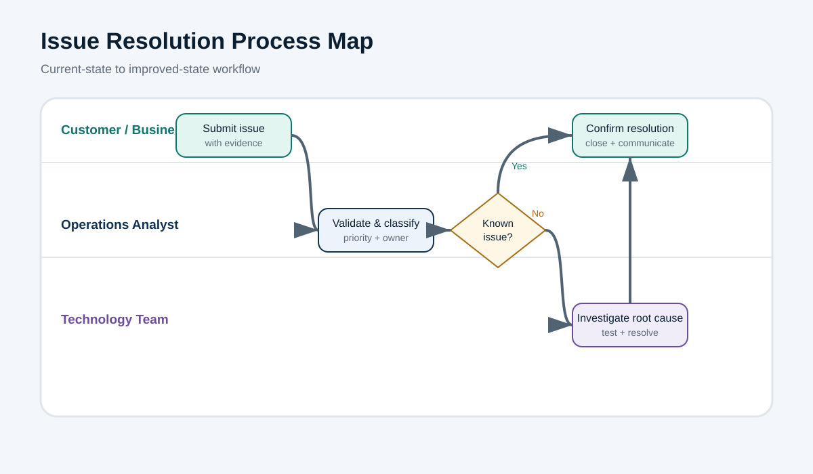

Purpose
Clarify how operational issues move from intake to closure and define ownership across the business, operations and technology teams.
Current-state concerns
- Issues arrive through multiple channels with inconsistent evidence.
- Priority and ownership are not assigned consistently.
- Known issues are repeatedly reinvestigated.
- Resolution communication is delayed or incomplete.
Proposed controls
- Standard intake form with issue type, evidence, impact and urgency.
- Triage matrix for severity, SLA and accountable owner.
- Known-error knowledge base before technology escalation.
- Closure checklist covering validation, communication and documentation.
Expected outcome
More consistent routing, fewer handoffs, stronger SLA visibility and a reusable record of root causes and resolutions.